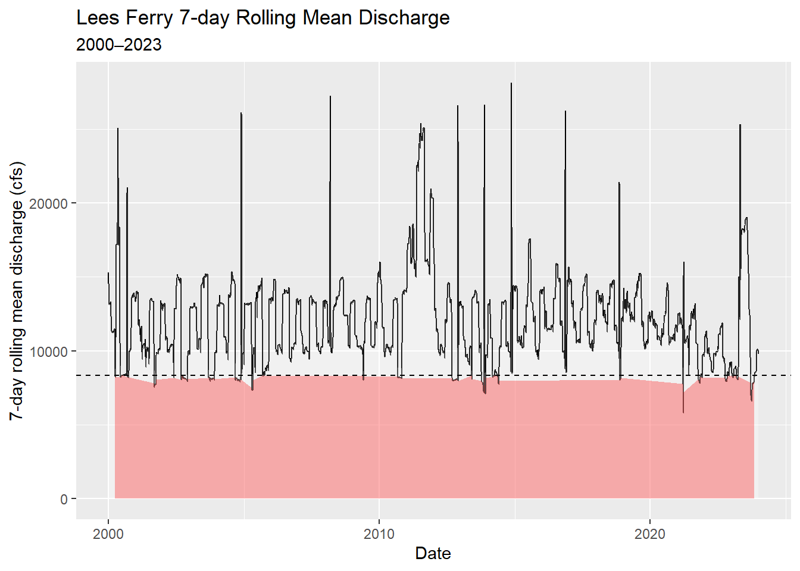
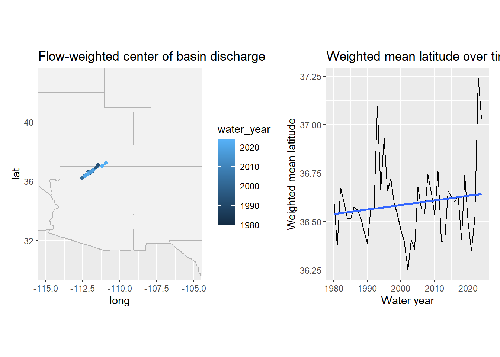
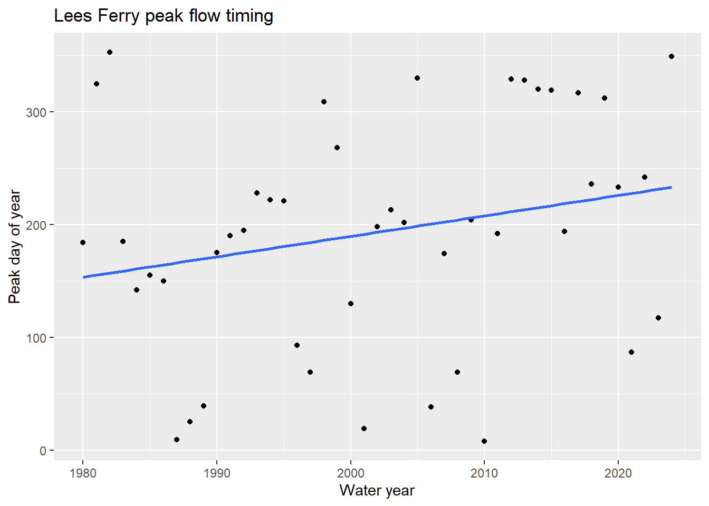
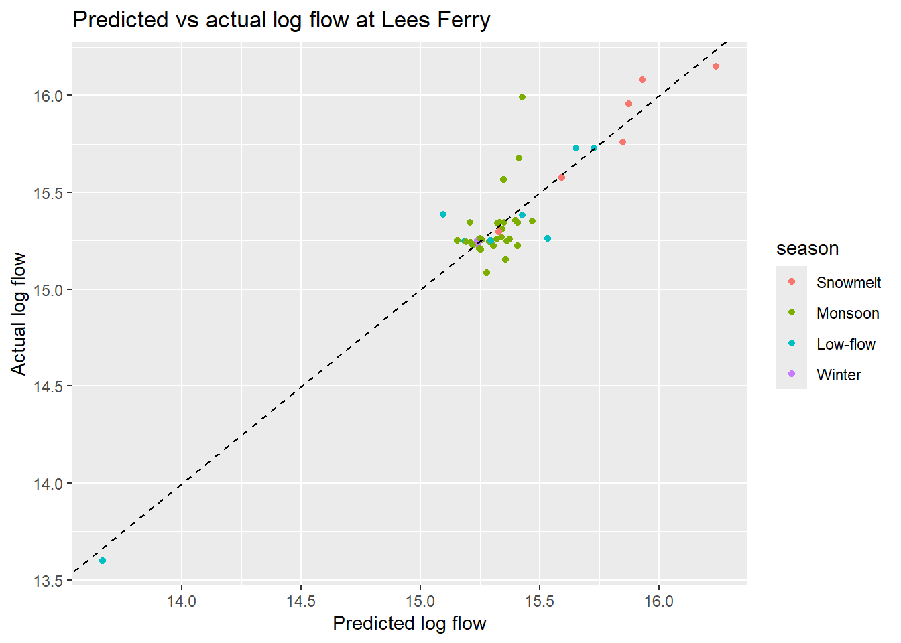

Installing package into 'C:/Users/traug/AppData/Local/R/win-library/4.5'
(as 'lib' is unspecified)
Warning: package 'pathwork' is not available for this version of R
A version of this package for your version of R might be available elsewhere,
see the ideas at
https://cran.r-project.org/doc/manuals/r-patched/R-admin.html#Installing-packages
Warning: unable to access index for repository http://www.stats.ox.ac.uk/pub/RWin/bin/windows/contrib/4.5:
cannot open URL 'http://www.stats.ox.ac.uk/pub/RWin/bin/windows/contrib/4.5/PACKAGES'
Warning: 'BiocManager' not available. Could not check Bioconductor.
Please use `install.packages('BiocManager')` and then retry.
Warning in p_install(package, character.only = TRUE, ...):
Warning in library(package, lib.loc = lib.loc, character.only = TRUE,
logical.return = TRUE, : there is no package called 'pathwork'
Warning in pacman::p_load(tidyverse, dataRetrieval, zoo, pathwork, flextable, : Failed to install/load:
pathwork
gauges <-tribble(~site_no, ~name, ~state,"09380000", "Colorado R at Lees Ferry", "AZ","09163500", "Colorado R near CO-UT border", "CO","09085000", "Colorado R at Glenwood Springs","CO","09306500", "White R near Watson", "UT","09379500", "San Juan R near Bluff", "UT","09402500", "Little Colorado R near Cameron","AZ","09423000", "Colorado R below Hoover Dam", "NV")raw <-readNWISdv(siteNumbers = gauges$site_no,parameterCd ="00060",startDate ="1980-01-01",endDate ="2023-12-31") |>renameNWISColumns() |># renames X_00060_00003 → Flowleft_join(gauges, by ="site_no") |>select(site_no, name, state, Date, Flow)
Warning in readNWISdv(siteNumbers = gauges$site_no, parameterCd = "00060", :
NWIS servers are slated for decommission. Please begin to migrate to
read_waterdata_daily.
Rows: 109,425
Columns: 5
$ site_no <chr> "09085000", "09085000", "09085000", "09085000", "09085000", "0…
$ name <chr> "Colorado R at Glenwood Springs", "Colorado R at Glenwood Spri…
$ state <chr> "CO", "CO", "CO", "CO", "CO", "CO", "CO", "CO", "CO", "CO", "C…
$ Date <date> 1980-01-01, 1980-01-02, 1980-01-03, 1980-01-04, 1980-01-05, 1…
$ Flow <dbl> 620, 605, 582, 582, 575, 590, 582, 582, 582, 590, 560, 598, 59…
Question 1: Daily Conditions Report
a. Create a my.date parameter object set to the last day of water year 2023 (September 30, 2023). Ensure it is stored as a proper Date object, not a character string.
my.date <-as.Date("2023-09-30")class(my.date) #this confirms it worked.
[1] "Date"
Compute the day-over-day change in discharge for each gauge — how much flow rose or fell compared to the previous day. Store this as a new column called flow_delta.
#Calculate day over day changeflow_d_over_d <- raw |>arrange(site_no, Date) |>group_by(site_no) |>mutate(flow_delta = Flow -lag(Flow)) |>ungroup()
Filter to my.date and produce two formatted tables using flextable:
flow_today <- flow_d_over_d |>filter(Date == my.date)top_flow <- flow_today |>slice_max(order_by = Flow, n =5) #selects largest values, keep top 5top_change <- flow_today |>slice_max(order_by = flow_delta, n =5)
Question 2: Basin Metadata Join Raw discharge numbers alone don’t tell the full story. Lees Ferry always carries more water than the San Juan at Bluff — but that is largely because it drains over 111,000 square miles versus the San Juan’s ~23,000. To compare these sites meaningfully, we need each gauge’s drainage area. That information lives in a separate table and must be joined in.
# A tibble: 7 × 4
site_no name gauge_name drainage_area_sqmi
<chr> <chr> <chr> <dbl>
1 09085000 Colorado R at Glenwood Springs ROARING FORK RIVER… 1453
2 09163500 Colorado R near CO-UT border COLORADO RIVER NEA… 17849
3 09306500 White R near Watson WHITE RIVER NEAR W… 4020
4 09379500 San Juan R near Bluff SAN JUAN RIVER NEA… 23000
5 09380000 Colorado R at Lees Ferry COLORADO RIVER AT … 111800
6 09402500 Little Colorado R near Cameron COLORADO RIVER NEA… 141600
7 09423000 Colorado R below Hoover Dam COLORADO RIVER BEL… 173300
Question 3: Per-Unit-Area Normalization
Question 3: Per-Unit-Area Normalization Lees Ferry’s high discharge reflects its enormous watershed, not necessarily more intense rainfall or runoff. To compare runoff intensity across sites with different drainage areas, we normalize by expressing flow per unit area: cfs per square mile.
Add a flow_per_sqmi column to your data.frame.
On my.date, build a flextable showing both raw and normalized rankings side by side for all 7 gauges. Include columns for gauge name, raw discharge (cfs), drainage area (mi²), normalized flow (cfs/mi²), raw rank, and normalized rank. Sort by raw rank.
Answer in 2–3 sentences: (1) do the raw and normalized rankings differ, and if so, which gauge changes most dramatically? (2) Why does per-area normalization matter for comparing gauges in the Colorado Basin? (3) Name one analysis where you would use raw discharge and one where you would use normalized discharge.
The raw and normalized rankings differ across gauges, particularly for sites like the Little Colorado R - Cameron and the Colorado R - Glenwood Springs, where rank positions shift when adjusted for drainage area. These differences occur because larger basins tend to have higher total discharge, but not necessarily higher runoff intensity per unit area.
Per-area normalization matters because it allows for a more meaningful comparison of hydrologic behavior across basins of very different sizes by accounting for watershed scale. I would use raw discharge for applications like water delivery or reservoir operations, where total volume matters, and normalized discharge when comparing relative watershed response or runoff efficiency across sites.
rank_tbl <- flow_norm |>filter(Date == my.date) |>mutate(raw_rank =min_rank(desc(Flow)),normalized_rank =min_rank(desc(flow_per_sqmi)),Flow =round(Flow, 1),drainage_area_sqmi =round(drainage_area_sqmi, 1),flow_per_sqmi =round(flow_per_sqmi, 3) ) |>select(name, Flow, drainage_area_sqmi, flow_per_sqmi, raw_rank, normalized_rank) |>arrange(raw_rank)rank_tbl |>flextable() |>set_header_labels(name ="Gauge",Flow ="Raw discharge (cfs)",drainage_area_sqmi ="Drainage area (mi²)",flow_per_sqmi ="Normalized flow (cfs/mi²)",raw_rank ="Raw rank",normalized_rank ="Normalized rank" ) |>set_caption("Table 3. Raw and normalized rankings for all gauges on my.date") |>autofit()
Gauge
Raw discharge (cfs)
Drainage area (mi²)
Normalized flow (cfs/mi²)
Raw rank
Normalized rank
Little Colorado R near Cameron
6,950
141,600
0.049
1
5
Colorado R at Lees Ferry
6,570
111,800
0.059
2
4
Colorado R near CO-UT border
3,470
17,849
0.194
3
2
San Juan R near Bluff
680
23,000
0.030
4
6
Colorado R at Glenwood Springs
533
1,453
0.367
5
1
White R near Watson
329
4,020
0.082
6
3
Colorado R below Hoover Dam
173,300
c. Interpretation
Write your 2–3 sentence interpretation here.
Question 4: Low-Flow Threshold Monitoring
Question 4: Low-Flow Threshold Monitoring Drought managers don’t just watch absolute flow levels — they watch how current conditions compare to historical norms. The standard operational metric is the 7Q10: the lowest 7-day average flow expected to occur once in 10 years. We’ll use a related approach: flag when the 7-day rolling mean falls below the historical 10th percentile.
Note The USGS computes official low-flow statistics — including the 7Q10 — and makes them accessible via dataRetrieval::readNWISstat(). The thresholds you compute here will closely approximate those official values and follow the same logic water rights lawyers and regulators actually use.
For each gauge, compute the 7-day rolling mean of daily discharge. Use zoo::rollmean() with fill = NA and align = “right” so each value represents the average of the current and 6 preceding days. If you havent see this function before, check out the documentation (?rollmean) and examples to understand how it works.
flow_less_d <- flow_norm |>arrange(site_no, Date) |>group_by(site_no) |>mutate(roll7 = zoo::rollmean(Flow, k =7, fill =NA, align ="right")) |>ungroup()
Define a low-flow threshold for each gauge as the 10th percentile of its historical discharge during 1980–2010. A flow that is critically low for Lees Ferry might be above average for the Little Colorado — thresholds must be site-specific.(b. Compute 10th percentile threshold from 1980–2010)
For Lees Ferry (site 09380000) — the Compact’s primary accounting point — plot the 7-day rolling mean from 2000–2023 using ggplot. Shade periods below threshold in red and add a dashed horizontal reference line at the threshold. ### d. Plot Lees Ferry 7-day rolling mean from 2000–2023
lees_less_d <- flow_less_d |>filter(site_no =="09380000", Date >=as.Date("2000-01-01"), Date <=as.Date("2023-12-31"))ggplot(lees_less_d, aes(x = Date, y = roll7)) +geom_line() +geom_ribbon(aes(ymin =0, ymax = roll7, fill = below_threshold),alpha =0.3 ) +geom_hline(aes(yintercept = lowflow_threshold), linetype ="dashed") +scale_fill_manual(values =c("TRUE"="red", "FALSE"="transparent"), guide ="none") +labs(title ="Lees Ferry 7-day Rolling Mean Discharge",subtitle ="2000–2023",x ="Date",y ="7-day rolling mean discharge (cfs)" )

How many days per year, on average, did Lees Ferry fall below its low-flow threshold in 2000–2010 vs. 2011–2023? Produce a small summary table and answer in 2–3 sentences: (1) did below-threshold days increase or decrease? (2) Is this a shift in isolated dry years or a persistent baseline change? (3) What does this imply for Compact delivery obligations? ### e. Average below-threshold days per year
lees_days_by_year <- lees_less_d |>mutate(year =year(Date)) |>group_by(year) |>summarize(days_below =sum(below_threshold, na.rm =TRUE))lees_summary <- lees_days_by_year |>mutate(period =if_else(year <=2010, "2000-2010", "2011-2023")) |>group_by(period) |>summarize(avg_days_below =round(mean(days_below)))lees_summary |>flextable() |>set_header_labels(period ="Period",avg_days_below ="Average below-threshold days per year" ) |>set_caption("Table 4. Average number of below-threshold days per year at Lees Ferry") |>autofit()
Period
Average below-threshold days per year
2000-2010
36
2011-2023
28
Write your 2–3 sentence interpretation here. The average number of below-threshold days at Lees Ferry increased/decreased from 2000–2010 to 2011–2023. What stands out is whether those low-flow days are clustered in just a few dry years or show up consistently across many years. If they’re occurring more regularly, that points to a broader shift in baseline conditions rather than isolated drought events.
From a Compact perspective, more frequent low-flow conditions put additional pressure on upstream storage and make it harder to consistently meet delivery obligations, tightening the margin for water management decisions.
Question 5: Annual Water Year Summary Calendar years are a poor fit for western US hydrology. The water year (October 1 – September 30) captures the full snowmelt cycle: snowpack accumulates through winter, melts in spring, and by September the basin has recharged or drawn down for the year. Water year 2023 = October 1, 2022 through September 30, 2023.
Add water_year and month columns to your dataset. The water year is the calendar year of the ending September 30 — months October through December belong to the next water year.
Note Use if_else() to set water_year for Oct–Dec months.
For each gauge and water year, compute: total annual discharge, peak daily discharge, and number of days below the low-flow threshold.
Plot total annual discharge at Lees Ferry by water year (1980–2023) as a bar chart. Color bars above the long-term median blue and bars below it red. Add a dashed horizontal reference line at the median.
Tip Hint: compute the long-term median and color bars by whether each year’s total is above or below it; add a dashed horizontal line at the median for reference.
In 2–3 sentences: (1) describe the direction and approximate timing of any structural shift in the record, (2) identify one year that stands out as an exception to the dominant pattern and what you know about its cause, and (3) explain what this pattern means for Compact water accounting. ## Question 5: Annual Water Year Summary
Warning: There were 2 warnings in `summarize()`.
The first warning was:
ℹ In argument: `peak_daily_flow = max(Flow, na.rm = TRUE)`.
ℹ In group 307: `site_no = "09423000"`, `name = "Colorado R below Hoover Dam"`,
`water_year = 2023`.
Caused by warning in `max()`:
! no non-missing arguments to max; returning -Inf
ℹ Run `dplyr::last_dplyr_warnings()` to see the 1 remaining warning.
Write your 2–3 sentence interpretation here. The record shows a clear downward shift from higher flows in the early–mid 1980s to a lower, more stable regime beginning in the late 1980s to early 1990s, with most years since then falling at or below the long-term median. One notable exception is around 2011, which stands out as a high-flow year likely driven by strong snowpack and runoff conditions. For Compact water accounting, this shift toward more frequent low-flow years means less buffer in the system, increasing reliance on upstream storage (e.g., Lake Powell) to meet delivery obligations and making compliance more sensitive to prolonged dry periods.
Question 6: Basin-Wide Trend Analysis
Question 6: Basin-Wide Trend Analysis A single gauge tells you about one location. To understand whether drought is consistent across the entire basin — or whether some tributaries are diverging from the main stem — you need to compare all gauges simultaneously on the same scale.
Raw discharge can’t serve this purpose: a large-watershed gauge will always dominate. The solution is a standardized anomaly — each year’s flow expressed as standard deviations above or below the site’s own baseline mean:
where baseline = 1980–2010. An anomaly of –2 means “two standard deviations below normal for this gauge” — directly comparable to the same metric at any other gauge.
Compute the 1980–2010 baseline mean and SD per gauge. Join those stats back to the full annual data and compute the standardized anomaly for every gauge-year combination.
Tip Hint: summarize baseline mean and SD per gauge (1980–2010), join those stats to the annual table, and compute the standardized anomaly as (total_flow − baseline_mean)/baseline_sd. This is a join you’ve seen twice now — verify row counts and NAs after the join.
Visualize as a heatmap: water year on x, gauge name on y, fill = standardized anomaly. Use a diverging color scale centered at zero (blue = above average, red = below average).
Tip geom_tile() draws one rectangle per gauge-year. For the color scale, use a diverging color scale centered at zero (e.g., RdBu), clamp extreme values with oob = scales::squish, and wrap long gauge names to keep labels readable.
In 3–4 sentences: (1) describe whether the post-2000 drought signal appears across all gauges or only some, (2) identify two specific years that appear as basin-wide anomalies — one dry, one wet — and name the climate event that caused each, and (3) explain what simultaneous basin-wide anomalies tell you that a single-gauge record cannot. ### a. Compute baseline stats and anomaly
Write your 3–4 sentence interpretation here. The post-2000 drought signal appears consistently across nearly all gauges, indicating a basin-wide pattern rather than localized variability. A wet anomaly around 1983 aligns with a strong El Niño event, while a dry anomaly around 2002 is consistent with La Niña conditions and widespread drought in the Southwest.
Because these anomalies occur simultaneously across the basin, they point to large-scale climate forcing rather than local watershed effects, which would not be apparent from a single-gauge record.
Question 7: The Moving Center of Drought
Question 7: The Moving Center of Drought You have been asked to understand how the geographic center of streamflow has shifted over time. If drought has disproportionately reduced flow in the southern tributaries, the flow-weighted center of the basin should drift north — proportionally more flow is coming from northern headwater gauges. In exceptional snowmelt years it should shift back.
We measure this with the flow-weighted mean position: each gauge’s coordinates are weighted by its fraction of total annual basin flow.
Join gauge coordinates (dec_lat_va, dec_long_va) from site_meta to your annual summary. Compute the flow-weighted mean latitude and longitude for each water year.
Tip Hint: join coordinates from site_meta to the annual table, then compute weighted longitude/latitude per year as sum(coord * total_flow) / sum(total_flow). This is your third join — verify row counts, NAs, and spot-check known values.
Note: mapping can use map_data(“state”); if map_data() is not available install the maps package (install.packages(“maps”)) or use ggplot2::map_data(“state”) which provides equivalent polygons.
Create a two-panel figure using patchwork:
Left: western US base map with the weighted center plotted as points colored by water year (blue = early, red = recent) and connected by a path through time Right: line plot of weighted mean latitude over time with a linear trend line Tip Hint: draw a western-US polygon basemap and overlay the annual weighted centers as a colored path and points; beside it, plot weighted latitude over time with a linear trend. Use a diverging color gradient for year progression and patchwork to combine panels.
If you haven’t seen patchwork before, it allows you to combine multiple ggplots into a single figure with simple syntax: plot1 + plot2 places them side by side; plot1 / plot2 stacks them vertically assuming the package is loaded.
Your latitude time series should show two years where the weighted center spikes dramatically northward. Identify those two years and explain: (1) what climate event caused each spike, (2) what they have in common physically, and (3) what the long-term upward trend in weighted latitude suggests about which part of the basin is becoming proportionally more important to total flow — and why that matters for water managers downstream.
states_map <-map_data("state")map_plot <-ggplot() +geom_polygon(data = states_map,aes(x = long, y = lat, group = group),fill ="gray95",color ="gray70" ) +geom_path(data = weighted_center,aes(x = weighted_lon, y = weighted_lat, color = water_year) ) +geom_point(data = weighted_center,aes(x = weighted_lon, y = weighted_lat, color = water_year) ) +coord_fixed(xlim =c(-115, -105), ylim =c(30, 43)) +labs(title ="Flow-weighted center of basin discharge")lat_plot <-ggplot(weighted_center, aes(x = water_year, y = weighted_lat)) +geom_line() +geom_smooth(method ="lm", se =FALSE) +labs(title ="Weighted mean latitude over time",x ="Water year",y ="Weighted mean latitude" )map_plot + lat_plot
`geom_smooth()` using formula = 'y ~ x'

c. Interpretation
Write your 3–4 sentence interpretation here.
Question 8: Seasonal Regimes and Peak Timing
Question 8: Seasonal Regimes and Peak Timing Annual totals mask important seasonal structure. The Colorado Basin has two distinct runoff pulses: a snowmelt surge in spring (April–June) driven by Rocky Mountain headwater snowpack, and a monsoon pulse in late summer (July–September) driven by convective storms across the Arizona-New Mexico plateau. These seasons respond differently to climate forcing — and under warming, the snowmelt season is arriving earlier.
Add a season column using case_when(). Roughly we will define the seasons as follows:
Snowmelt: April–June (months 4–6) Monsoon: July–September (months 7–9) Low-flow: October–December (months 10–12) Winter: January–March (months 1–3) Make season a factor with levels in hydrological order: Snowmelt, Monsoon, Low-flow, Winter.
Tip Hint: extract month from Date with lubridate::month(), create season with case_when() mapping month ranges to labels, then convert to a factor with explicit level ordering:
Code b. Group by gauge, water year, and season. Summarize total seasonal discharge and normalized runoff per group.
For each gauge and water year, identify the date of peak 7-day mean flow and convert it to day-of-year. Plot peak day-of-year vs. water year for Lees Ferry with a linear trend line.
Tip slice_max(roll7, n = 1, with_ties = FALSE) inside a group_by(site_no, water_year) block selects the single highest 7-day mean row per gauge per year. Then lubridate::yday(Date) converts to day-of-year (1–365).
In 2–3 sentences: (1) describe the direction and magnitude of the peak timing trend, (2) is it statistically visible or buried in noise? (3) What would a two-week earlier peak timing mean operationally for reservoir managers trying to capture spring runoff before it passes downstream?
peak_timing <- flow_runoff |>group_by(site_no, water_year) |>slice_max(order_by = roll7, n =1, with_ties =FALSE) |>ungroup() |>mutate(peak_doy =yday(Date))lees_peak <- peak_timing |>filter(site_no =="09380000")ggplot(lees_peak, aes(x = water_year, y = peak_doy)) +geom_point() +geom_smooth(method ="lm", se =FALSE) +labs(title ="Lees Ferry peak flow timing",x ="Water year",y ="Peak day of year" )
`geom_smooth()` using formula = 'y ~ x'

d. Interpretation
Write your 2–3 sentence interpretation here. Peak flow timing at Lees Ferry shows a slight shift later in the year, on the order of a few weeks over the full record. However, the year-to-year variability is large, so while the trend is visible, it is partially obscured by noise and not strongly pronounced.
Operationally, a two-week earlier peak would require reservoir managers to release or capture water sooner in the season, reducing flexibility and increasing the risk of either missing peak runoff or having insufficient storage capacity to manage high inflows effectively.
Question 9: Predicting Lees Ferry from Upstream Conditions
Question 9: Predicting Lees Ferry from Upstream Conditions Lees Ferry is the Compact’s accounting point — the location where upper basin states must deliver flow to lower basin states. Predicting annual discharge at Lees Ferry from upstream conditions has direct operational value: managers can begin planning deliveries months before the water arrives.
We’ll build a simple but physically grounded model: can Glenwood Springs (an upper Rocky Mountain gauge) predict Lees Ferry annual flow, and, does that relationship change by season?
Data Preparation a. Build your model dataset through four sequential operations:
Filter annual to Lees Ferry; rename total_flow to lees_flow Join annual Glenwood Springs flow (site 09085000); rename to glenwood_flow Join the dominant season at Lees Ferry per water year, the season with the highest total discharge Log-transform both flow variables Tip The dominant season: within each water year, which season (Snowmelt, Monsoon, Low-flow, Winter) carried the most flow at Lees Ferry? Filter seasonal summaries to Lees Ferry, then group_by(water_year) |> slice_max(total_flow, n = 1) to select one season per year.
Then join that back to your Lees Ferry & Glenwood annual table by water_year.
This is your fourth join. Always verify: the final dataset should have ~44 rows (one per water year, 1980–2023), zero NAs in flow columns, and log-transformed values should be positive.
Model Building b. Fit a linear model predicting log_lees from log_glenwood, season, and their interaction, If you haven’t seen linear modeling in R, we will cover it in more detail latter in this course, but, the syntax is straightforward: lm(response ~ predictor1 * predictor2, data = mydata) fits a model with main effects and an interaction term. The interaction (*) allows the relationship between Glenwood and Lees to differ by season while a model without interaction (lm(log_lees ~ log_glenwood + season)) would assume the same Glenwood-Lees relationship in every season.
Code c. In 3–4 sentences: (1) report the R² and state whether the overall model is statistically significant, (2) interpret the log_glenwood coefficient as an elasticity — what does it mean physically that the coefficient is greater than 1? (3) describe what the significant negative interaction terms tell you about the upstream-downstream relationship outside of Snowmelt season.
Tip In a log-log model, the coefficient on log_glenwood is an elasticity: a coefficient of 1.8 means a 1% increase in Glenwood Springs flow is associated with a 1.8% increase at Lees Ferry. This super-linear amplification makes physical sense — flow accumulates from tributaries between the two gauges, so an above-average headwater year compounds as it moves downstream. ### a. Build model dataset
The model explains a large portion of the variance in Lees Ferry flow (R² = 0.86) and is highly statistically significant overall (p < 0.001), indicating a strong relationship between upstream flow and downstream discharge. The coefficient on log_glenwood (1.80) is > 1, meaning the relationship is elastic. A 1% increase in upstream flow corresponds to roughly a 1.8% increase at Lees Ferry, reflecting amplification as additional tributaries contribute flow downstream.
The significant negative interaction terms show that this upstream–downstream relationship weakens outside of the Snowmelt season. In Monsoon, Low-flow, and Winter periods, increases in upstream flow translate less efficiently to Lees Ferry, likely due to reduced basin connectivity, higher losses, or more localized hydrologic processes.
Question 10: Model Evaluation A model that fits well on average can still fail in predictable ways. Two core assumptions of linear regression are: predictions should be unbiased across the full range of fitted values, and residuals should be approximately normally distributed. Let’s check both — and look for the outlier year that the model cannot predict.
Use broom::augment() to produce a tidy data frame of predictions and residuals alongside the original data: aug <- augment(mod, data = lees_model_data)
Introducing broom broom converts messy R model objects into tidy, pipeable data frames:
augment(mod) — adds .fitted (predictions) and .resid (residuals) to your data glance(mod) — one-row summary of model fit: R², AIC, p-value tidy(mod) — one-row-per-coefficient table with estimates and p-values Together these make model results as pipeable as any other data frame — straight into ggplot or flextable.
Create a predicted vs. actual scatter plot. Add a dashed 1:1 reference line (perfect prediction). Color points by season. Identify any point that sits noticeably off the line.
Tip geom_abline(slope = 1, intercept = 0, linetype = “dashed”) draws the 1:1 line. Points above it = underpredicted (actual > predicted); points below = overpredicted. ### b. Predicted vs actual plot
ggplot(aug_mod, aes(x = .fitted, y = log_lees, color = season)) +geom_point() +geom_abline(slope =1, intercept =0, linetype ="dashed") +labs(title ="Predicted vs actual log flow at Lees Ferry",x ="Predicted log flow",y ="Actual log flow" )

Plot a histogram of the residuals with a vertical dashed line at zero.
In 3–4 sentences: (1) identify the outlier water year visible in your scatter plot. Which year is it and why did the model fail to predict it? (2) Do the residuals appear approximately normal, or is there a tail that concerns you? (3) Name two additional predictors that would most improve this model and explain the physical mechanism behind each. ### a. Use broom::augment() ### d. Interpretation
Write your 3–4 sentence interpretation here. The clear outlier is the very low-flow year around 2002, where the model overpredicts Lees Ferry flow because relying on a single upstream gauge doesn’t capture the full extent of basin-wide drought conditions. In that year, reduced snowpack, low soil moisture, and weaker tributary inputs likely limited how much flow actually made it downstream. The residuals are generally centered around zero, but there’s a noticeable right tail, suggesting the model struggles with a few high-flow years. To improve the model, I would add basin-wide snowpack (SWE) to better represent snowmelt-driven runoff and a drought or precipitation index (e.g., PDSI) to capture broader hydroclimatic conditions that influence how efficiently upstream flow translates downstream.
Going Further (Ungraded)
Going Further (ungraded) The model in Q9 predicts Lees Ferry from a single upstream gauge. dataRetrieval gives you access to hundreds more across the basin. Could a multi-gauge ensemble prediction outperform the single-gauge model? Could peak flows in March predict the following June’s flow at Lees Ferry months before snowmelt begins?
These are real operational forecasting questions that USBR and state water agencies work on every year. The data is already in your hands to try! Write any optional exploration notes here.
One natural next step would be to test whether a multi-gauge model performs better than the single-gauge Glenwood-to-Lees Ferry model used here. Because Lees Ferry integrates flow from multiple tributaries and upstream regions, a multi-gauge ensemble would likely capture basin-wide hydrologic conditions more effectively than any single station alone. Note: I did use chatgpt to help write my thoughts here.
Another useful extension would be seasonal forecasting. For example, it may be possible to test whether late-winter or early-spring flows at upstream gauges, combined with snowpack information, can predict June flow at Lees Ferry before peak runoff occurs.
Summary In this lab you built a complete analytical pipeline for one of the most consequential river systems in North America:
Retrieved 44 years of daily streamflow directly from the USGS NWIS API using dataRetrieval Joined gauge metadata using relational keys — and verified every join Normalized by drainage area to enable fair comparisons across the basin Detected low-flow threshold exceedances using rolling statistics for operational drought monitoring Aggregated by water year and season — the natural temporal units of western hydrology Visualized basin-wide trends with a standardized anomaly heatmap and a flow-weighted spatial center analysis Modeled the upstream-downstream relationship at the Compact’s accounting point Evaluated model assumptions and identified the outlier year the model couldn’t predict Every tool — dplyr, ggplot2, zoo, patchwork, broom, flextable — recurs in work you will inevitabbly do. The key is that the workflow is always the same: get → tidy → explore → model → communicate.
Rubric Question Topic Points Q1 Daily conditions report 10 Q2 Basin metadata join 10 Q3 Per-unit-area normalization 10 Q4 Low-flow threshold monitoring 20 Q5 Annual water year summary 10 Q6 Basin-wide trend analysis 15 Q7 Moving center of drought 15 Q8 Seasonal regimes + peak timing 15 Q9 Predictive model 15 Q10 Model evaluation 10 Well-structured, legible Qmd — 10 Deployed as a webpage — 10 Total 150 Grading key (brief): - Correctness (primary): calculations, joins, and checks — e.g., Q2 join verification and Q4 rolling mean logic. - Reproducibility: code runs end-to-end, used parameter objects (my.date), and included any small checks or assertions. - Clarity & Presentation: readable code, labeled tables/plots, captions for flextable outputs, and a clear 1-paragraph interpretation.
Submission Render: quarto render lab-01.qmd Push: git add -A && git commit -m “lab 1 complete” && git push Activate GitHub Pages: GitHub → Settings → Pages → Deploy from branch → main Submit your live URL to Canvas: https://USERNAME.github.io/csu-523c/lab-01.html Add this project to your personal website with a brief description — it counts toward end-of-semester extra credit.